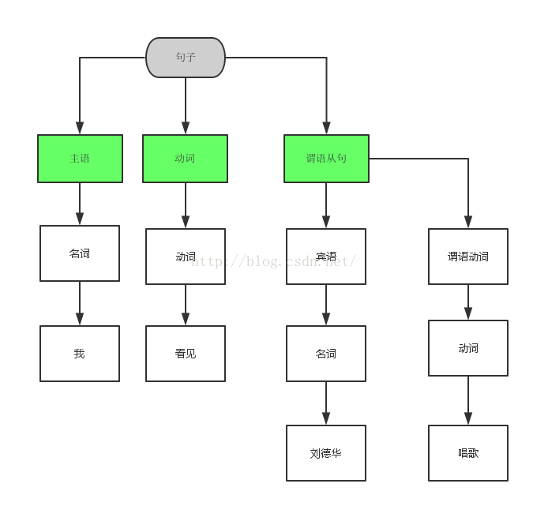

语法和解析树：
举个例子看看，语法解析的过程。句子：“我看到刘德华唱歌”。在计算机里，怎么用程序解析它呢。从语法上看，句子的组成是由主语，动词，和谓语从句组成，主语是“我”，动词是“看见”， 谓语从句是”刘德华唱歌“。因此一个句子可以分解成 主语 ＋ 动词 ＋ 谓语从句：
句子-->主语＋动词 ＋ 谓语从句
主语是名词，因此有 ：
主语->名词
句子里的名词有： “我”， “刘德华”，因此有解析规则：
名词-> "我“ | "刘德华".
句子里的动词是“看见”， “唱歌”，由此有解析规则：
动词-> “看见” ｜ “唱歌”
再看谓语从句，谓语从句由宾语和谓语动词组成, 宾语是 “刘德华”， 谓语动词是“唱歌", 谓语从句的解析规则就是：
谓语从句 -> 宾语 ＋ 谓语动词
谓语动词是属于动词，于是又有：
谓语动词-> 动词
动词->”看见” | "唱歌"
这样，整个句子的解析规则就有：
1.句子-->主语＋动词 ＋ 谓语从句
2.谓语从句 -> 宾语 ＋ 谓语动词
3.主语->名词
4.谓语动词->动词
5.动词-> “看见” ｜ “唱歌”
6.名词-> "我“ | "刘德华".
上面这组解析规则就是在计算机中用来解析句子的算法，接下来我们通过一系列替换，从这组规则还原回句子，首先从第一个规则开始，用右边的式子替换左边的符号，
1. 句子 通过规则 ：句子-->主语＋动词 ＋ 谓语从句 替换得到：
2. 主语＋动词 ＋ 谓语从句， 通过规则 主语->名词 替换得到：
3. 名词 ＋ 动词 ＋ 谓语从句， 通过规则 名词-> "我“ | "刘德华" 替换得到
4. 我 ＋ 动词 ＋ 谓语从句， 通过规则 动词-> "看见" 替换得到：
5. 我 看见 ＋ 谓语从句， 通过规则 谓语从句 -> 宾语 ＋ 谓语动词 替换得到：
6. 我 看见 宾语＋谓语动词， 通过规则 宾语->名词 替换得到：
7. 我 看见 名词＋谓语动词， 通过规则 名词-> "我“ | "刘德华" 替换得到：
8. 我 看见 刘德华 ＋ 谓语动词， 通过规则 谓语动词->动词 替换得到：
9. 我 看见 刘德华 动词。通过规则 动词-> “唱歌” 替换得到
10 我 看见 刘德华 唱歌
至此，我们已经没有可替换的地方，于是语法解析完成。 由此可见，语法解析就是通过设立一组规则，然后判断输入的文本是否符合给定规则的过程。我们看到，最底层的一些规则是这样的：
名词-> "我“ | "刘德华"， 动词-> “看见” ｜“唱歌“
这几条规则，其实就是以前(http://blog.csdn.net/tyler_download/article/details/50668983)所说的词法分析，-> 左边就是标签，右边就是词法分析的字符串。整个解析过程，形成了一种树状结构，这个结构就叫语法解析树：

设想，由文字组成的文本，其形式是无穷的，语法解析的规则是将无穷的文本中，选取出组合形式符合语法规则的文本，例如对于上述语法，句子：“我看见张学友唱歌” 就无法通过语法规则，按照上面的替换过程，我们发现，到第7步时 解析到宾语，宾语替换成名词后无法将名词替换成“张学友”, 因此“我看见张学友唱歌”对于上面的语法规则而言，是非法输入。
当然，语法规则所限定的文本输入也不是唯一的，句子:“刘德华看见我唱歌” 也符合上面的语法规则，大家可以仿照上面的替换过程验证一下。
如果想要语法识别“我看见张学友唱歌”， 那么只要将规则改一下:名词->”我“ ｜ ”刘德华” | “张学友” 即可。
我们看看，将上述替代过程转成计算机伪码是怎样的：
假定“我看见刘德华唱歌” 这歌句子存在缓冲区buffer 里，那么代码表述如下：
句子(buffer) {
//主语 ＋ 动词 ＋ 谓语从句 替换 句子
主语(buffer);
动词(buffer);
谓语从句(buffer);
}
主语(buffer) {
//名词 替换 主语
名词(buffer);
}
名词(buffer) {
// “我” ｜ “刘德华” 替换 名词
if (buffer[0] == “我”) {
buffer = buffer.substring(1);
return;
}
if (buffer[0,1,2] == “刘德华”) {
buffer = buffer.substring(3);
return;
}
throw new Exception (“该语句不符合语法”);
}
动词(buffer) {
// “看见” | “唱歌“ 替换 动词
if (buffer[0,1］== “看见” || buffer[0,1] == “唱歌") {
buffer = buffer.substring(2);
return;
}
throw new Exception (“该语句不符合语法”);
}
谓语从句(buffer) {
//宾语 谓语动词 替换 谓语从句
宾语(buffer);
谓语动词(buffer);
}
宾语(buffer) {
//名词 替换 宾语
名词(buffer);
}
谓语动词（buffer) {
//动词 替换 谓语动词
动词(buffer);
}
在下一篇，我们看看，如何对带有加好和乘号的算术表达式，如何制定一套语法规则以及相应的语法替换代码。